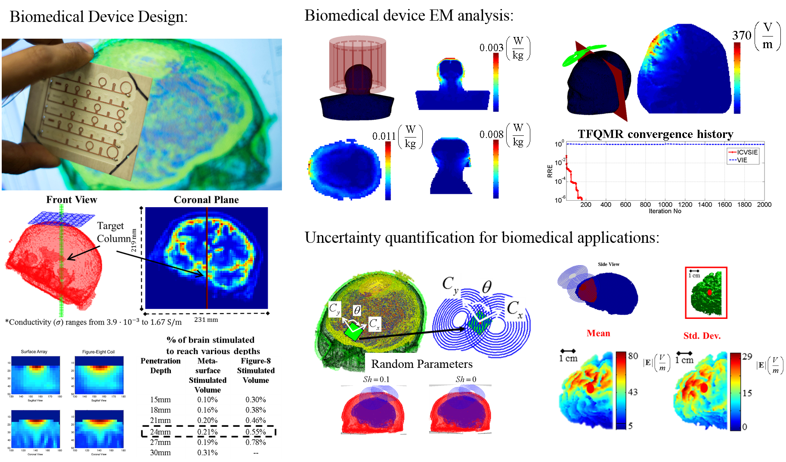
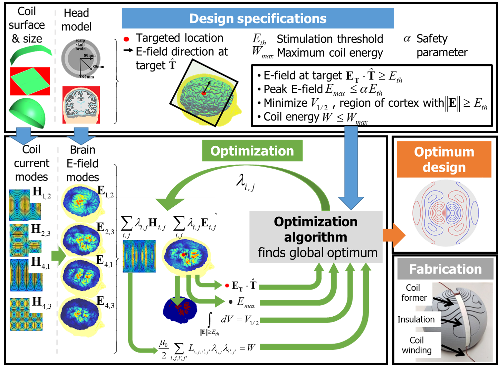

Luis J. Gomez
Postdoctoral Associate, Duke University
Brain Stimulation Engineering Lab
Google Scholar Profile
Public Github Repositories
Email:
luis.gomez@duke.edu
luisgo@umich.edu

My research focuses on developing and implementing novel scientific computing methods targeting a wide range of electromagnetic (EM) and optical phenomena, with a focus on brain stimulation/science and other biomedical applications. The techniques I am developing enable scientists and engineers to analyze and develop new (medical) technologies, reducing their reliance on extensive design experiments and prototyping.
Research Projects

Optimization framework for designing TMS coils that are more focal, stimulate deeper, and are more energy efficient than existing coils: Many TMS applications require maximally focused and deep electric fields to selectively engage neural circuits. Unfortunately, electric fields generated by present-day TMS coils rapidly diffuse and decay as they penetrate into the head. Consequently, they tend to stimulate relatively large regions near the brain’s surface. This work developed optimization methodologies for designing TMS coils to achieve optimal trade-off between the depth and focality of the induced electric field, as well as the energy required by TMS coils. These coils, which were designed by our computational framework, are superior to existing TMS coils, oftentimes halving the stimulation volume for a given penetration depth.
a. L. J. Gomez, S. Goetz, and A. V. Peterchev, "Design of Transcranial Magnetic Stimulation Coils with Optimal Trade-off between Depth, Focality, and Energy," Journal of neural engineering, 2018.
link
b. B. Wang, Z. Deng, J. Smith, J. Tharayil, C. Gurrey, L. J. Gomez, A. Peterchev, "Redesigning existing transcranial magnetic stimulation coils to reduce energy: application to low field magnetic stimulation," Journal of neural engineering, 2018.
link
c. L. J. Gomez, F. Cajko, L. Hernandez-Garcia, A. Grbic, and E. Michielssen, " Numerical Analysis and Design of Single-Source Multicoil TMS for Deep and Focused Brain Stimulation," IEEE Trans. Biomed. Eng., vol. 60, no. 10, pp. 2771-82, October 2013
link
d. L. Hernandez-Garcia, T. Hall,L. J. Gomez, and E. Michielssen, "A numerically optimized active shield for
improved transcranial magnetic stimulation targeting," Brain Stimulation: Basic, Translational, and Clinical
Research in Neuromodulation, vol. 3, no. 4, pp. 218-225, 2010.
link
A low-frequency and high/low/negative-permittivity stable integral equation solver for electromagnetic analysis of highly heterogeneous media: The ability to determine EM phenomena inside highly heterogeneous media that have regions with a large electric and/or negative permittivity has many potential biological, geophysical, metamaterial, and plasma applications. Currently, volume integral equations (VIEs) are used to analyze EM scattering from highly heterogeneous materials. Unfortunately, when used to analyze EM scattering from materials with a much different electric permittivity than that of their surrounding medium (i.e., high or negative permittivity objects), their discretization calls for very fine meshes and results in ill-conditioned systems of equations. Consequently, VIEs are not well suited for the abovementioned applications. As part of my dissertation work, I developed the novel internally combined volume-surface integral equation (ICVSIE) and showed preliminary results demonstrating that discretizing the ICVSIE yields matrices with condition numbers that are unaffected by the materials’ maximum permittivity and its sign. Unlike other methods, the ICVSIE method can be used to determine EM phenomena occurring inside objects with arbitrarily high permittivity and at a broad range of frequencies, enabling its use as the first general-purpose tool for EM analysis of medical applications. A general-purpose EM solver enables medical professionals with little background in EM to accurately conduct EM analyses of their medical procedures and improve them, thereby streamlining new technological development. Furthermore, the ICVSIE is negative-permittivity stable and it is the first solver capable of analyzing the blackout that occurs whenever space vehicles travel through negative-permittivity plasma regions of the Earth’s atmosphere. This technology will aid in designing new antennas that generate EM signals that can penetrate the plasma and do not cause a communication blackout.
a. A. C. Yucel, L. J. Gomez, and E. Michielssen, "Internally Combined Volume-Surface Integral Equation for EM Analysis of Inhomogeneous Negative Permittivity Plasma Scatterers," IEEE Transactions on Antennas and Propagation, vol. 66, no. 4, pp. 1903-1913, 2018.
link
b. L. J. Gomez, A. C. Yücel, and E. Michielssen, "The ICVSIE: A General Purpose Integral Equation Method for Bio-Electromagnetic Analysis," IEEE Transactions on Biomedical Engineering, vol. 65, no. 3, pp. 565-574, 2018.
link
c. L. J. Gomez, A. C. Yucel, and E. Michielssen, "Internally Combined Volume-Surface Integral Equation for a 3D Electromagnetic Scattering Analysis of High Contrast Media," IEEE Antennas and Wireless Propagation Letters, vol. 16, pp. 1691-1694, 2017.
link
d. L. J. Gomez, A. C. Yücel, and E. Michielssen, "Volume-surface combined field integral equation for plasma scatterers," IEEE Antennas and Wireless Propagation Letters, vol. 14, pp. 1064-1067, 2015.
link
e. L. J. Gomez, A. C. Yücel, and E. Michielssen, "Low-frequency stable internally combined volume-surface integral equation for high-contrast scatterers," IEEE Antennas and Wireless Propagation Letters, vol. 14, pp. 14231426, 2015.
link
Uncertainty quantification (UQ) framework for predicting variability in TMS procedures resulting from variability in coil positioning and anatomical differences between patients: The location, volume, and depth of the brain region stimulated during TMS is often strongly affected by variability in the TMS coil’s position and orientation, as well as anatomical differences between subjects. In principle, TMS procedures can be statistically characterized by repeatedly executing a CEM simulator in a traditional Monte-Carlo setting; in practice, the computational cost of such an approach is exorbitant. Thus, I developed a framework that leverages high-dimensional model representations (HDMRs) to statistically characterize the region stimulated by TMS. First, we generate parameterized surrogate models for the electric field. Next, we use these models in lieu of the EM simulator to obtain statistics from the stimulated regions via Monte-Carlo. The framework successfully identifies key parameters that strongly affect the TMS electric field strength and focus and partially explains the large variations in treatment responses observed during TMS. Furthermore, identifying these key parameters results in a roadmap for refining TMS procedures.
a. L. J. Gomez, A. C. Yücel, L. Hernandez-Garcia, S. F. Taylor, and E. Michielssen, "Uncertainty quantification in transcranial magnetic stimulation via high-dimensional model representation," IEEE Transactions on Biomedical Engineering, vol. 62, no. 1, pp. 361-372, 2015.
link
b. L. J. Gomez , W. Sheng, A. Yucel, E. Michielssen, "Fast Statistical Characterization of Rough Surface Scattering via Tensor Train Decompositions," Antennas and Propagation Society International Symposium (APSURSI), July 2016
c. L. J. Gomez , A. Yucel, E. Michielssen, " Sensitivity of TMS-Induced Electric Fields to the Uncertainty in Coil Placement and Brain Anatomy," Antennas and Propagation Society International Symposium (APSURSI), July 2014
Development of optimal complexity algorithms for compression of finite difference matrix inverses and boundary element matrices: Because TMS current pulses carry energy in the 1-10 kHz range, the fields they generate historically have been analyzed using quasi-static finite difference (FD) and finite element (FE) methods. Unfortunately, these methods require the solution of ill-conditioned sparse linear systems of equations, involving millions of unknowns. This is currently achieved using iterative techniques with CPU run-times of minutes, preventing their use in realtime applications. I developed a new direct FD solver that leverages a multi-frontal approach and compression using hierarchical matrices. After a factorization step during which the inverse is computed, the solver can solve for TMS induced E-fields in a few seconds enabling its use in real-time.
Another approach to analyze E-fields is to reformulate the scenario as a boundary integral equation. This approach can yield considerable advantages such as reduction of number of unknowns N, operator with a bounded condition number, and easier handling of geometric complexity. However, its solution requires storing a dense matrix requiring O(N^2) memory. Fast multipole method-fast Fourier transform (FMM-FFT) accelerated boundary element solvers permit the efficient and accurate analysis of electromagnetic scattering from complex and large-scale structures due to their ease of implementation, high parallel scalability, and low O(N^4/3*N*log^2/3 N) CPU and memory requirements. For many applications, these solvers tend to be memory- as opposed to CPU- limited. We used Tucker decompositions (also known as higher order singular value decompositions) to lessen the memory requirements of translation operator tensors in FMM-FFT accelerated BEMs. For many practical examples, the proposed drop-in code enhancement results in over 90% reduction in these tensors' storage requirements while imposing negligible computational overhead, thus significantly enhancing the solvers' application range on fixed computational resources.
a. A. C. Yucel, L. J. Gomez, and E. Micielssen, "Compression of Translation Operator Tensors in FMM-FFT Accelerated SIE Solvers via Tucker Decomposition," IEEE Antennas and Wireless Propagation Letters, vol. 16,pp. 2667-2670, 2017.
link
b. F. Cajko, E. Michielssen, L. J. Gomez , P. G. Martinsson, L. Hernandez, "A fast direct solver for TMS analysis and design in 3D," Antennas and Propagation Society International Symposium (APSURSI), July 2011
c. F. Cajko, E. Michielssen, L. J. Gomez , P. G. Martinsson, L. Hernandez, " A Fast Direct Solver for Transcranial Magnetic Stimulation Analysis," Antennas and Propagation Society International Symposium (APSURSI), July 2010
© Luis Gomez
Last updated 00/00/00

Public Github Repositories
luis.gomez@duke.edu
luisgo@umich.edu
|
Last updated 00/00/00